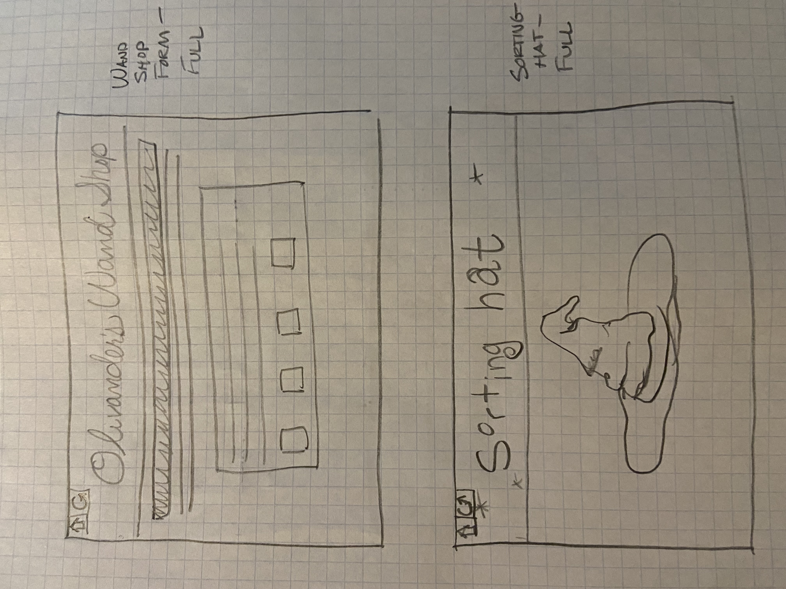
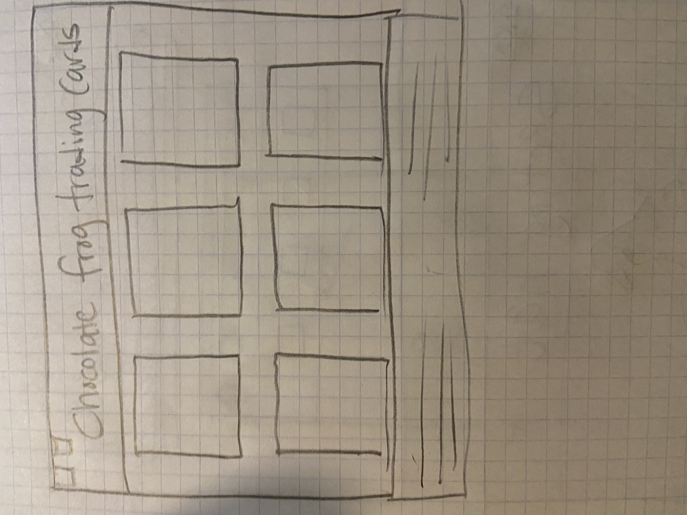
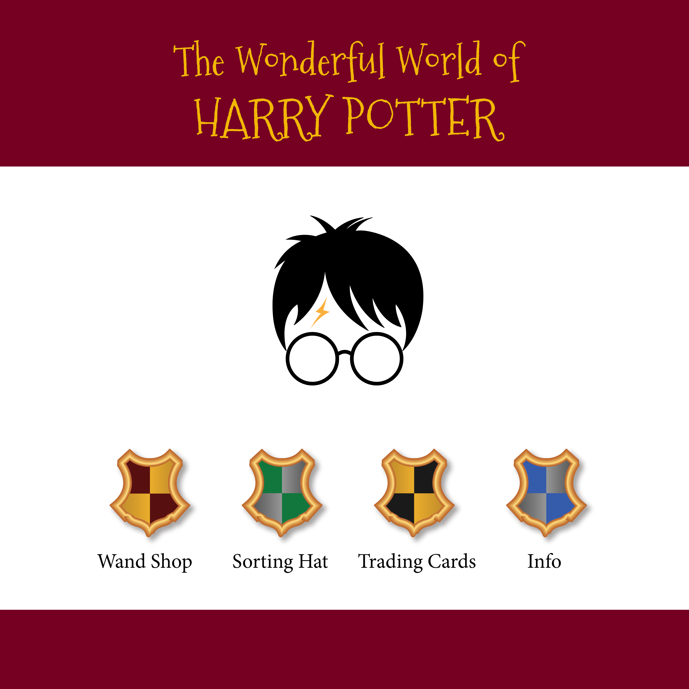
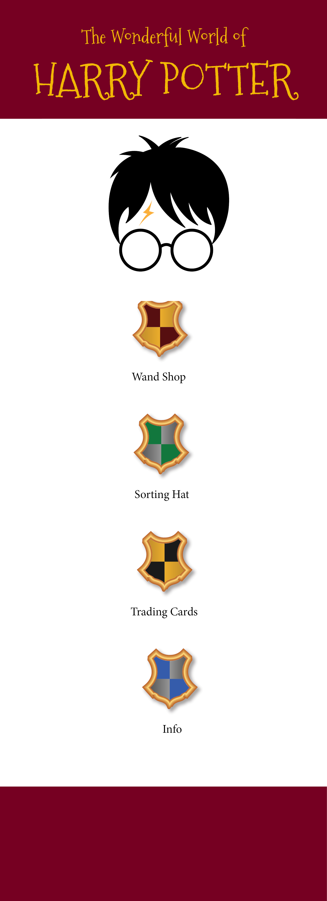
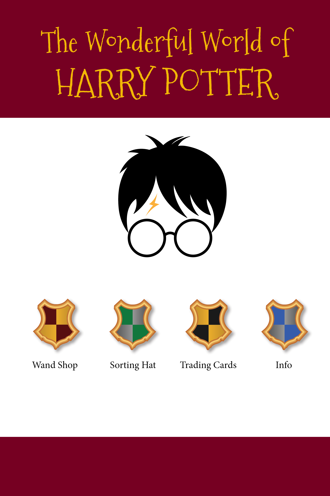

DESCRIPTION
After an eventful semester where I’ve been exposed to many new (to me) features of JavaScript, HTML, and CSS, I wanted to find a project that will use what I’ve learned. I hoped to find something that will be a challenge and push my skills as a developer, but also something achievable by someone like me, someone relatively new as a front end developer. After exploring and researching many options, I would like to propose a Harry Potter App. This would be a multi-tiered app that would stretch my skills, and also be fun to build.
I envision my app having three parts. First would be a “sorting hat” activity that allows users to be sorted into the appropriate house. This would use an event listener, a local JSON file that I’ll write, and some simple animations to make it the ceremony appear magic. When a user hovers over the sorting hat, the transformations would be triggered, making the sorting hat move. Then the user’s official house will be returned.
The second part of my app would be a “Chocolate Frog Trading Card” feature. It would consume data from an external API (found here) and use JavaScript to dynamically create trading cards. I’d use CSS to style them, ideally having flip over to show the “reverse side” when you hover over them. I’ve never done a transformation like that, but I know it’s possible, so I’m excited to figure it out.
Finally, I’d like to make a wand shop that lets you be fitted for a wand. This would start with a wand application (a form you’ll fill out). Then you’ll try a few wands, which will use canvas to let you draw on the screen by moving your mouse (or, hopefully, your finger on a touch screen) to trace some spell patterns. Then your wand will be revealed to you. I’ll use arrays to store the different wand properties (length, wood type, and core material) and then generate a wand for the user selecting random elements from each of my arrays to create it.
I have a pretty good idea what will need to be done to build something like this, but I think it will be at the very edge of my capabilities, which is good.
COLOR PALETTE
My color theme would take inspiration from the rich colors you might find in a tapestry in a castle. There are two reds, two golds, and a deep mahogany brown. These would be supplemented by generous use of white, plus a touch of blue and green in the Hogwarts House crests used as icons.
.jpeg)
TYPOGRAPHY
To honor the source material, headlines in my app will use the font, “Mountains of Christmas” which is a Google font that looks a lot like the official Harry Potter font, Lumos. The body copy will use Roboto for ease of reading and pleasant contrast with the headlines.

WIREFRAMES
 full screen mockup (1200 px width):
mobile mockup (800 px width):
tablet mockup (400 px width):
AUDIENCE
This will be a very simple, largely graphic interface, making it suitable for elementary-aged children (or the young at heart). If I were actually developing this for the market, I can think of half a dozen games and activities that would be fun to include. I was a crazy Cubmaster for many, many years, and coming up with activities to delight the 8-11 audience is right in my wheelhouse.
INITIAL MODULE LIST
This is certainly an incomplete list because I’m so new to modules, I think I’ll largely figure out what I need as I build it and encounter the situation. However, I can see a module that manages the form and the responses from the user and passes those results to a module that calculates the results and returns the wand information.
I also think each mini-activity would have its own module (to try and keep things organized).
SCHEDULE
This will be an ambitious undertaking, so I won’t have a moment to waste. I’ll probably need to get one section of my app built and running each week.
- Module 10: Finalize plans and prototypes. Write JSON. Figure out how the API works.
- Module 11: Build the index and the Trading Cards section
- Module 11: Build the Sorting Hat section; start on Wand Shop
- Module 12: Finish Wand shop.
- Module 13: Testing, troubleshooting, refining, anything left over from previous list. Add audio effects and transitions.